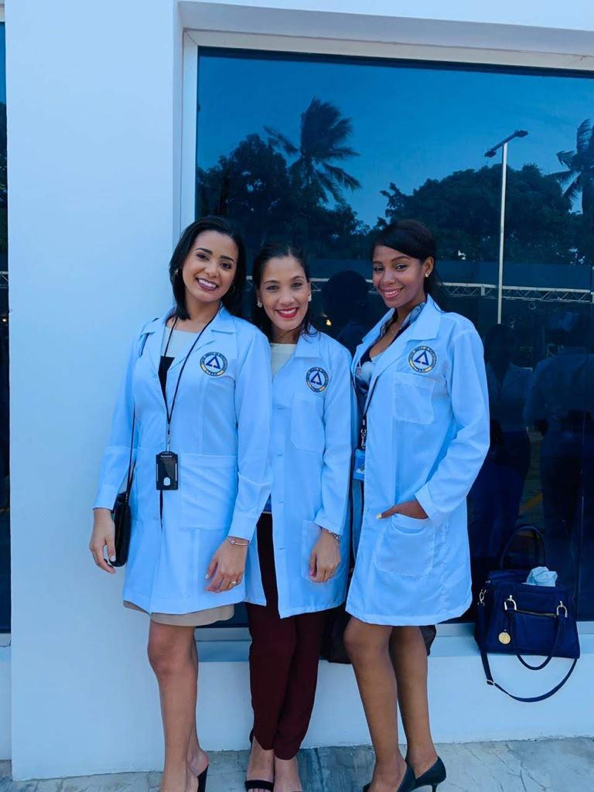
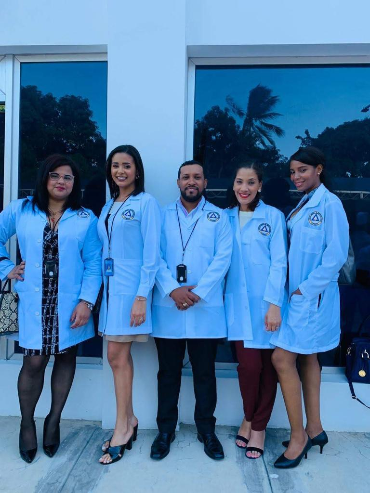
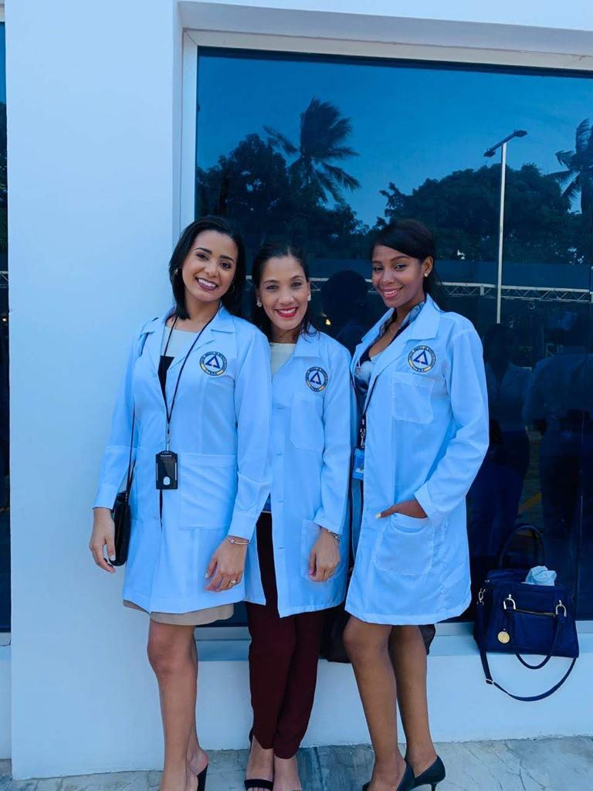
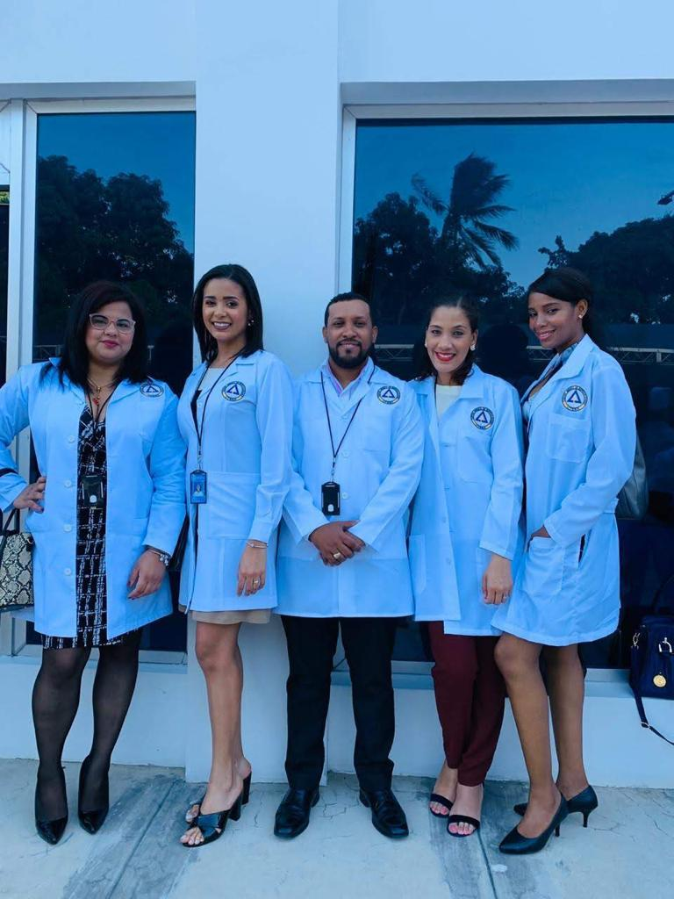

Ada Victoria's journey into the field of medicine is a testament to her unwavering commitment to making a positive impact on people's lives.
Influenced by the compassionate healthcare professionals she observed in her community during her formative years, she embarked on a path
that would lead her to become a dedicated physician. Her educational background in her home country provided her with a comprehensive medical program,
offering a strong foundation in both theoretical knowledge and practical clinical experience.
However, Ada's determination to excel in the field of medicine didn't stop at her homeland's borders. Seeking to validate her credentials and
broaden her horizons, she undertook a challenging journey to adapt to the American medical system. This endeavor required significant time and effort,
as she worked diligently to meet the stringent standards set by the United States.
Ada's motivation to relocate to the United States was driven by a profound admiration for the nation's renowned healthcare system, vast research opportunities,
and the rich cultural diversity it offers. Her aspirations in the U.S. extend beyond acquiring a medical license; she envisions herself as a physician who
delivers culturally sensitive care and contributes to the advancement of medical knowledge.
What sets Ada apart is not just her academic and clinical background but also her prior experience in patient care and effective communication.
Having actively participated in healthcare initiatives and volunteer work within her community, she embodies a deep commitment to giving back and improving
the well-being of those she serves. Ada Victoria's journey into medicine is not just a personal pursuit but a testament to her dedication to making a difference in the lives of others.